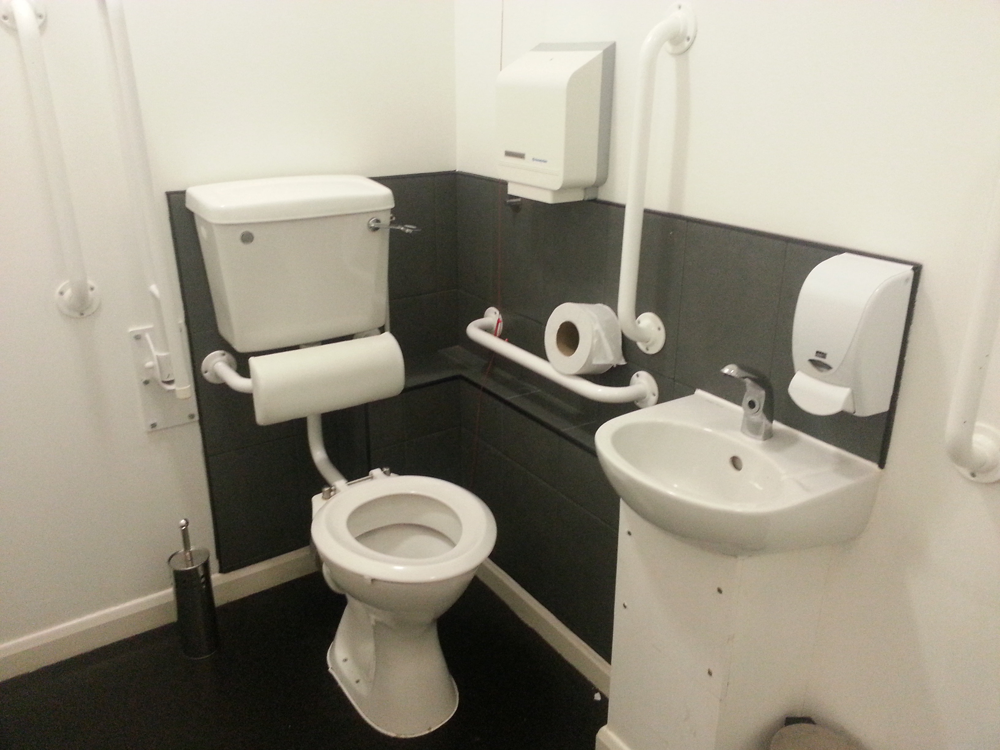

From disability to accessibility......

Getting around in a wheelchair is difficult
It can make finding somewhere to eat  , stay or shop take a large amount of time and effort
, stay or shop take a large amount of time and effort
, stay or shop take a large amount of time and effort

Wheelchair users know what works for them
So, how can help???
By using open data and crowd sourcing of course!!!
We take the location data from the Google Places API and add that to the high-quality accessibility data, crowd sourced from sufferers nationwide
Giving us a vast quantity of:
- accurate
- and trustworty
Would you like to see a demo???
Try it out at:
How about the technical side of things?
Google Places API


 ,
,  , ,
, ,  , CSS
, CSS
So... future development???
Questions!